From tree priors...
- In the first lecture on Bayesian phylogenetics, we briefly mentioned the role of tree-generating models.


Probability of coalescence in generation $i-m$: $P(m)=(1-p_{\textrm{coal}})^{m-1}p_{\textrm{coal}}$
Continuous time limit (large $N$, small $g$): $P(t)=e^{-\frac{1}{Ng}t}\frac{1}{Ng}$
Question: How can this be generalized to $k$ samples?
Answer: $p_{\text{coal}}=\frac{k(k-1)}{2}\frac{1}{N}=\binom{k}{2}\frac{1}{N}$
$\therefore$ With the right model, we can learn about population structure from phylogenies!
Can use a chemical reaction notation to describe rates and effects of possible events:
The parameters $\lambda$ and $\mu$ are probabilities per [time unit] that any given individual experiences a birth or a death.
Additionally, the model allows each surviving lineage at the end of the process (present day) to be sampled with probability $\rho$.
There are several distinct parameterizations, including:
Note there are subtly different ways of handling the removal on sampling probability too.
 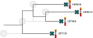
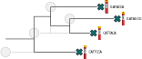
 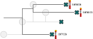
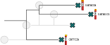


 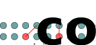
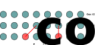
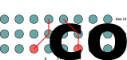
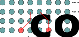
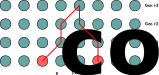
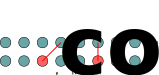
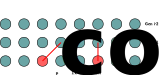
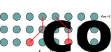
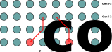
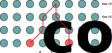


 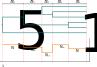
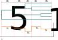


 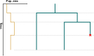
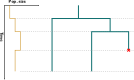


 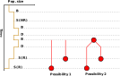
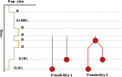
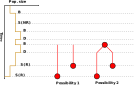
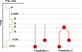
 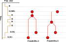
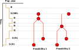
 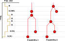
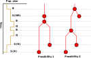